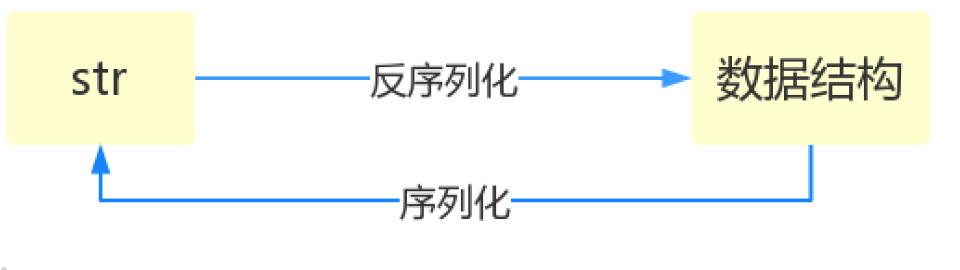
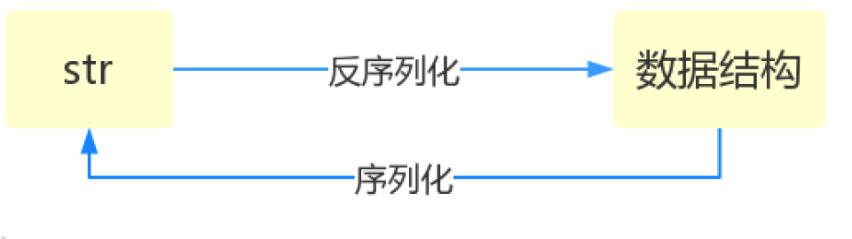

认识模块
什么是模块？
常见的场景：一个模块就是一个包含了 python 定义和声明的文件，文件名就是模块名字加上.py 的后缀。
但其实 import 加载的模块分为四个通用类别：
1 使用 python 编写的代码（.py 文件）
2 已被编译为共享库或 DLL 的 C 或 C++ 扩展
3 包好一组模块的包
4 使用 C 编写并链接到 python 解释器的内置模块
为何要使用模块？
如果你退出 python 解释器然后重新进入，那么你之前定义的函数或者变量都将丢失，因此我们通常将程序写到文件中以便永久保存下来，需要时就通过 python test.py 方式去执行，此时 test.py 被称为脚本 script。
随着程序的发展，功能越来越多，为了方便管理，我们通常将程序分成一个个的文件，这样做程序的结构更清晰，方便管理。这时我们不仅仅可以把这些文件当做脚本去执行，还可以把他们当做模块来导入到其他的模块中，实现了功能的重复利用，
模块的导入和使用
模块的导入应该在程序开始的地方
常用模块
collections 模块
在内置数据类型（dict、list、set、tuple）的基础上，collections 模块还提供了几个额外的数据类型：Counter、deque、defaultdict、namedtuple 和 OrderedDict 等。
1.namedtuple: 生成可以使用名字来访问元素内容的 tuple
2.deque: 双端队列，可以快速的从另外一侧追加和推出对象
3.Counter: 计数器，主要用来计数
4.OrderedDict: 有序字典
5.defaultdict: 带有默认值的字典
namedtuple(具名元组)
我们知道 tuple 可以表示不变集合，例如，一个点的二维坐标就可以表示成：
但是，看到(1, 2)，很难看出这个 tuple 是用来表示一个坐标的。
这时，namedtuple 就派上了用场：
from collections import namedtuple
Point = namedtuple('Point', ['x', 'y'])
p = Point(1, 2)
p.x
1
p.y
2
用具名元组来记录一个城市的信息
from collections import namedtuple
City = namedtuple('City', 'name country population coordinates')
# 第一个是类名，第二个是类的各个字段的名字。后者可以是由数个字符串组成的可迭代对象，或者是由空格分隔开的字段名组成的字符串
tokyo = City('Tokyo', 'JP', 36.933, (35.689722, 139.691667))
tokyo
City(name='Tokyo', country='JP', population=36.933, coordinates=(35.689722, 139.691667))
tokyo.population
36.933
tokyo.coordinates
(35.689722, 139.691667)
tokyo[1]
'JP'
类似的，如果要用坐标和半径表示一个圆，也可以用 namedtuple 定义：
deque
使用 list 存储数据时，按索引访问元素很快，但是插入和删除元素就很慢了，因为 list 是线性存储，数据量大的时候，插入和删除效率很低。
deque 是为了高效实现插入和删除操作的双向列表，适合用于队列和栈：
from collections import deque
q = deque(['a', 'b', 'c'])
q.append('x')
q.appendleft('y')
q
deque(['y', 'a', 'b', 'c', 'x'])
deque 除了实现 list 的 append() 和 pop() 外，还支持 appendleft() 和 popleft()，这样就可以非常高效地往头部添加或删除元素。
OrderedDict
使用 dict 时，Key 是无序的。在对 dict 做迭代时，我们无法确定 Key 的顺序。
如果要保持 Key 的顺序，可以用 OrderedDict：
from collections import OrderedDict
d = dict([('a', 1), ('b', 2), ('c', 3)])
d # dict的Key是无序的
{'a': 1, 'c': 3, 'b': 2}
od = OrderedDict([('a', 1), ('b', 2), ('c', 3)])
od # OrderedDict的Key是有序的
OrderedDict([('a', 1), ('b', 2), ('c', 3)])
注意，OrderedDict 的 Key 会按照插入的顺序排列，不是 Key 本身排序：
defaultdict
有如下值集合
[``11``,``22``,``33``,``44``,``55``,``66``,``77``,``88``,``99``,``90.``..]，将所有大于 ``66` `的值保存至字典的第一个key中，将小于 ``66` `的值保存至第二个key的值中。
即： {``'k1'``: 大于``66` `, ``'k2'``: 小于``66``}
values = [11, 22, 33,44,55,66,77,88,99,90]
my_dict = {}
for value in values:
if value>66:
if my_dict.has_key('k1'):
my_dict['k1'].append(value)
else:
my_dict['k1'] = [value]
else:
if my_dict.has_key('k2'):
my_dict['k2'].append(value)
else:
my_dict['k2'] = [value]
from collections import defaultdict
values = [11, 22, 33,44,55,66,77,88,99,90]
my_dict = defaultdict(list)
for value in values:
if value>66:
my_dict['k1'].append(value)
else:
my_dict['k2'].append(value)
使用 dict 时，如果引用的 Key 不存在，就会抛出 KeyError。如果希望 key 不存在时，返回一个默认值，就可以用 defaultdict：
from collections import defaultdict
dd = defaultdict(lambda: 'N/A')
dd['key1'] = 'abc'
dd['key1'] # key1存在
'abc'
dd['key2'] # key2不存在，返回默认值
'N/A'
Counter
Counter 类的目的是用来跟踪值出现的次数。它是一个无序的容器类型，以字典的键值对形式存储，其中元素作为 key，其计数作为 value。计数值可以是任意的 Interger（包括 0 和负数）。Counter 类和其他语言的 bags 或 multisets 很相似。
c = Counter('abcdeabcdabcaba')
print c
输出：Counter({'a': 5, 'b': 4, 'c': 3, 'd': 2, 'e': 1})
其他详细内容 https://www.cnblogs.com/Dominic-Ji/articles/11109089.html
时间模块
和时间有关系的我们就要用到时间模块。在使用模块之前，应该首先导入这个模块。
表示时间的三种方式
在 Python 中，通常有这三种方式来表示时间：时间戳、元组(struct_time)、格式化的时间字符串：
(1)时间戳(timestamp) ：通常来说，时间戳表示的是从 1970 年 1 月 1 日 00:00:00 开始按秒计算的偏移量。我们运行“type(time.time())”，返回的是 float 类型。
(2)格式化的时间字符串(Format String)： ‘1999-12-06’
%y 两位数的年份表示（00-99）
%Y 四位数的年份表示（000-9999）
%m 月份（01-12）
%d 月内中的一天（0-31）
%H 24小时制小时数（0-23）
%I 12小时制小时数（01-12）
%M 分钟数（00=59）
%S 秒（00-59）
%a 本地简化星期名称
%A 本地完整星期名称
%b 本地简化的月份名称
%B 本地完整的月份名称
%c 本地相应的日期表示和时间表示
%j 年内的一天（001-366）
%p 本地A.M.或P.M.的等价符
%U 一年中的星期数（00-53）星期天为星期的开始
%w 星期（0-6），星期天为星期的开始
%W 一年中的星期数（00-53）星期一为星期的开始
%x 本地相应的日期表示
%X 本地相应的时间表示
%Z 当前时区的名称
%% %号本身
(3)元组(struct_time) ：struct_time 元组共有 9 个元素共九个元素:(年，月，日，时，分，秒，一年中第几周，一年中第几天等）
| 索引（Index） | 属性（Attribute） | 值（Values） |
|---|---|---|
| 0 | tm_year（年） | 比如 2011 |
| 1 | tm_mon（月） | 1 - 12 |
| 2 | tm_mday（日） | 1 - 31 |
| 3 | tm_hour（时） | 0 - 23 |
| 4 | tm_min（分） | 0 - 59 |
| 5 | tm_sec（秒） | 0 - 60 |
| 6 | tm_wday（weekday） | 0 - 6（0 表示周一） |
| 7 | tm_yday（一年中的第几天） | 1 - 366 |
| 8 | tm_isdst（是否是夏令时） | 默认为 0 |
首先，我们先导入 time 模块，来认识一下 python 中表示时间的几种格式：
#导入时间模块
>>>import time
#时间戳
>>>time.time()
1500875844.800804
#时间字符串
time.strftime("%Y-%m-%d %X")
'2017-07-24 13:54:37'
time.strftime("%Y-%m-%d %H-%M-%S")
'2017-07-24 13-55-04'
#时间元组:localtime将一个时间戳转换为当前时区的struct_time
time.localtime()
time.struct_time(tm_year=2017, tm_mon=7, tm_mday=24,
tm_hour=13, tm_min=59, tm_sec=37,
tm_wday=0, tm_yday=205, tm_isdst=0)
小结：时间戳是计算机能够识别的时间；时间字符串是人能够看懂的时间；元组则是用来操作时间的
几种格式之间的转换

#时间戳-->结构化时间
#time.gmtime(时间戳) #UTC时间，与英国伦敦当地时间一致
#time.localtime(时间戳) #当地时间。例如我们现在在北京执行这个方法：与UTC时间相差8小时，UTC时间+8小时 = 北京时间
time.gmtime(1500000000)
time.struct_time(tm_year=2017, tm_mon=7, tm_mday=14, tm_hour=2, tm_min=40, tm_sec=0, tm_wday=4, tm_yday=195, tm_isdst=0)
time.localtime(1500000000)
time.struct_time(tm_year=2017, tm_mon=7, tm_mday=14, tm_hour=10, tm_min=40, tm_sec=0, tm_wday=4, tm_yday=195, tm_isdst=0)
#结构化时间-->时间戳
#time.mktime(结构化时间)
>>>time_tuple = time.localtime(1500000000)
>>>time.mktime(time_tuple)
1500000000.0
#结构化时间-->字符串时间
#time.strftime("格式定义","结构化时间") 结构化时间参数若不传，则显示当前时间
>>>time.strftime("%Y-%m-%d %X")
'2017-07-24 14:55:36'
>>>time.strftime("%Y-%m-%d",time.localtime(1500000000))
'2017-07-14'
#字符串时间-->结构化时间
#time.strptime(时间字符串,字符串对应格式)
>>>time.strptime("2017-03-16","%Y-%m-%d")
time.struct_time(tm_year=2017, tm_mon=3, tm_mday=16, tm_hour=0, tm_min=0, tm_sec=0, tm_wday=3, tm_yday=75, tm_isdst=-1)
>>>time.strptime("07/24/2017","%m/%d/%Y")
time.struct_time(tm_year=2017, tm_mon=7, tm_mday=24, tm_hour=0, tm_min=0, tm_sec=0, tm_wday=0, tm_yday=205, tm_isdst=-1)

#结构化时间 --> %a %b %d %H:%M:%S %Y串
#time.asctime(结构化时间) 如果不传参数，直接返回当前时间的格式化串
>>>time.asctime(time.localtime(1500000000))
'Fri Jul 14 10:40:00 2017'
>>>time.asctime()
'Mon Jul 24 15:18:33 2017'
#时间戳 --> %a %b %d %H:%M:%S %Y串
#time.ctime(时间戳) 如果不传参数，直接返回当前时间的格式化串
>>>time.ctime()
'Mon Jul 24 15:19:07 2017'
>>>time.ctime(1500000000)
'Fri Jul 14 10:40:00 2017'
import time
true_time=time.mktime(time.strptime('2017-09-11 08:30:00','%Y-%m-%d %H:%M:%S'))
time_now=time.mktime(time.strptime('2017-09-12 11:00:00','%Y-%m-%d %H:%M:%S'))
dif_time=time_now-true_time
struct_time=time.gmtime(dif_time)
print('过去了%d年%d月%d天%d小时%d分钟%d秒'%(struct_time.tm_year-1970,struct_time.tm_mon-1,
struct_time.tm_mday-1,struct_time.tm_hour,
struct_time.tm_min,struct_time.tm_sec))
datetime 模块
import datetime
# 自定义日期
res = datetime.date(2019, 7, 15)
print(res) # 2019-07-15
# 获取本地时间
# 年月日
now_date = datetime.date.today()
print(now_date) # 2019-07-01
# 年月日时分秒
now_time = datetime.datetime.today()
print(now_time) # 2019-07-01 17:46:08.214170
# 无论是年月日，还是年月日时分秒对象都可以调用以下方法获取针对性的数据
# 以datetime对象举例
print(now_time.year) # 获取年份2019
print(now_time.month) # 获取月份7
print(now_time.day) # 获取日1
print(now_time.weekday()) # 获取星期(weekday星期是0-6) 0表示周一
print(now_time.isoweekday()) # 获取星期(weekday星期是1-7) 1表示周一
# timedelta对象
# 可以对时间进行运算操作
import datetime
# 获得本地日期 年月日
tday = datetime.date.today()
# 定义操作时间 day=7 也就是可以对另一个时间对象加7天或者减少7点
tdelta = datetime.timedelta(days=7)
# 打印今天的日期
print('今天的日期:{}'.format(tday)) # 2019-07-01
# 打印七天后的日期
print('从今天向后推7天:{}'.format(tday + tdelta)) # 2019-07-08
# 总结:日期对象与timedelta之间的关系
"""
日期对象 = 日期对象 +/- timedelta对象
timedelta对象 = 日期对象 +/- 日期对象
验证:
"""
# 定义日期对象
now_date1 = datetime.date.today()
# 定义timedelta对象
lta = datetime.timedelta(days=6)
now_date2 = now_date1 + lta # 日期对象 = 日期对象 +/- timedelta对象
print(type(now_date2)) # <class 'datetime.date'>
lta2 = now_date1 - now_date2 # timedelta对象 = 日期对象 +/- 日期对象
print(type(lta2)) # <class 'datetime.timedelta'>
# 小练习 计算举例今年过生日还有多少天
birthday = datetime.date(2019, 12, 21)
now_date = datetime.date.today()
days = birthday - now_date
print('生日：{}'.format(birthday))
print('今天的日期：{}'.format(tday))
print('距离生日还有{}天'.format(days))
# 总结年月日时分秒及时区问题
import datetime
dt_today = datetime.datetime.today()
dt_now = datetime.datetime.now()
dt_utcnow = datetime.datetime.utcnow() # UTC时间与我们的北京时间cha ju
print(dt_today)
print(dt_now)
print(dt_utcnow)
random 模块
import random
#随机小数
random.random() # 大于0且小于1之间的小数
0.7664338663654585
random.uniform(1,3) #大于1小于3的小数
1.6270147180533838#恒富：发红包
#随机整数
random.randint(1,5) # 大于等于1且小于等于5之间的整数
random.randrange(1,10,2) # 大于等于1且小于10之间的奇数
#随机选择一个返回
random.choice([1,'23',[4,5]]) # #1或者23或者[4,5]
#随机选择多个返回，返回的个数为函数的第二个参数
random.sample([1,'23',[4,5]],2) # #列表元素任意2个组合
[[4, 5], '23']
#打乱列表顺序
>>> item=[1,3,5,7,9]
>>> random.shuffle(item) # 打乱次序
>>> item
[5, 1, 3, 7, 9]
>>> random.shuffle(item)
>>> item
[5, 9, 7, 1, 3]
练习：生成随机验证码
import random
def v_code():
code = ''
for i in range(5):
num=random.randint(0,9)
alf=chr(random.randint(65,90))
add=random.choice([num,alf])
code="".join([code,str(add)])
return code
print(v_code())
os 模块
os 模块是与操作系统交互的一个接口
os.makedirs('dirname1/dirname2') 可生成多层递归目录
os.removedirs('dirname1') 若目录为空，则删除，并递归到上一级目录，如若也为空，则删除，依此类推
os.mkdir('dirname') 生成单级目录；相当于shell中mkdir dirname
os.rmdir('dirname') 删除单级空目录，若目录不为空则无法删除，报错；相当于shell中rmdir dirname
os.listdir('dirname') 列出指定目录下的所有文件和子目录，包括隐藏文件，并以列表方式打印
os.remove() 删除一个文件
os.rename("oldname","newname") 重命名文件/目录
os.stat('path/filename') 获取文件/目录信息
os.system("bash command") 运行shell命令，直接显示
os.popen("bash command).read() 运行shell命令，获取执行结果
os.getcwd() 获取当前工作目录，即当前python脚本工作的目录路径
os.chdir("dirname") 改变当前脚本工作目录；相当于shell下cd
os.path
os.path.abspath(path) 返回path规范化的绝对路径os.path.split(path) 将path分割成目录和文件名二元组返回
os.path.dirname(path) 返回path的目录。其实就是os.path.split(path)的第一个元素
os.path.basename(path) 返回path最后的文件名。如何path以／或\结尾，那么就会返回空值。即os.path.split(path)的第二个元素
os.path.exists(path) 如果path存在，返回True；如果path不存在，返回False
os.path.isabs(path) 如果path是绝对路径，返回True
os.path.isfile(path) 如果path是一个存在的文件，返回True。否则返回False
os.path.isdir(path) 如果path是一个存在的目录，则返回True。否则返回False
os.path.join(path1[, path2[, ...]]) 将多个路径组合后返回，第一个绝对路径之前的参数将被忽略
os.path.getatime(path) 返回path所指向的文件或者目录的最后访问时间
os.path.getmtime(path) 返回path所指向的文件或者目录的最后修改时间
os.path.getsize(path) 返回path的大小
注意：os.stat('path/filename') 获取文件/目录信息 的结构说明
stat 结构:
st_mode: inode 保护模式
st_ino: inode 节点号。
st_dev: inode 驻留的设备。
st_nlink: inode 的链接数。
st_uid: 所有者的用户ID。
st_gid: 所有者的组ID。
st_size: 普通文件以字节为单位的大小；包含等待某些特殊文件的数据。
st_atime: 上次访问的时间。
st_mtime: 最后一次修改的时间。
st_ctime: 由操作系统报告的"ctime"。在某些系统上（如Unix）是最新的元数据更改的时间，在其它系统上（如Windows）是创建时间（详细信息参见平台的文档）。
os.sep 输出操作系统特定的路径分隔符，win下为"\\",Linux下为"/"
os.linesep 输出当前平台使用的行终止符，win下为"\r\n",Linux下为"\n"
os.pathsep 输出用于分割文件路径的字符串 win下为;,Linux下为:
os.name 输出字符串指示当前使用平台。win->'nt'; Linux->'posix'
sys 模块
sys 模块是与 python 解释器交互的一个接口
sys.argv 命令行参数List，第一个元素是程序本身路径
sys.exit(n) 退出程序，正常退出时exit(0),错误退出sys.exit(1)
sys.version 获取Python解释程序的版本信息
sys.path 返回模块的搜索路径，初始化时使用PYTHONPATH环境变量的值
sys.platform 返回操作系统平台名称
import sys
try:
sys.exit(1)
except SystemExit as e:
print(e)
序列化模块
什么叫序列化——将原本的字典、列表等内容转换成一个字符串的过程就叫做 序列化 。
比如，我们在python代码中计算的一个数据需要给另外一段程序使用，那我们怎么给？
现在我们能想到的方法就是存在文件里，然后另一个python程序再从文件里读出来。
但是我们都知道，对于文件来说是没有字典这个概念的，所以我们只能将数据转换成字典放到文件中。
你一定会问，将字典转换成一个字符串很简单，就是str(dic)就可以办到了，为什么我们还要学习序列化模块呢？
没错序列化的过程就是从dic 变成str(dic)的过程。现在你可以通过str(dic)，将一个名为dic的字典转换成一个字符串，
但是你要怎么把一个字符串转换成字典呢？
聪明的你肯定想到了eval()，如果我们将一个字符串类型的字典str_dic传给eval，就会得到一个返回的字典类型了。
eval()函数十分强大，但是eval是做什么的？e官方demo解释为：将字符串str当成有效的表达式来求值并返回计算结果。
ＢＵＴ！强大的函数有代价。安全性是其最大的缺点。
想象一下，如果我们从文件中读出的不是一个数据结构，而是一句"删除文件"类似的破坏性语句，那么后果实在不堪设设想。
而使用eval就要担这个风险。
所以，我们并不推荐用eval方法来进行反序列化操作(将str转换成python中的数据结构)
序列化的目的
1、以某种存储形式使自定义对象持久化；
2、将对象从一个地方传递到另一个地方。
3、使程序更具维护性。
 

json
Json 模块提供了四个功能：dumps、dump、loads、load
import json
dic = {'k1':'v1','k2':'v2','k3':'v3'}
str_dic = json.dumps(dic) #序列化：将一个字典转换成一个字符串
print(type(str_dic),str_dic) #<class 'str'> {"k3": "v3", "k1": "v1", "k2": "v2"}
#注意，json转换完的字符串类型的字典中的字符串是由""表示的
dic2 = json.loads(str_dic) #反序列化：将一个字符串格式的字典转换成一个字典
#注意，要用json的loads功能处理的字符串类型的字典中的字符串必须由""表示
print(type(dic2),dic2) #<class 'dict'> {'k1': 'v1', 'k2': 'v2', 'k3': 'v3'}
list_dic = [1,['a','b','c'],3,{'k1':'v1','k2':'v2'}]
str_dic = json.dumps(list_dic) #也可以处理嵌套的数据类型
print(type(str_dic),str_dic) #<class 'str'> [1, ["a", "b", "c"], 3, {"k1": "v1", "k2": "v2"}]
list_dic2 = json.loads(str_dic)
print(type(list_dic2),list_dic2) #<class 'list'> [1, ['a', 'b', 'c'], 3, {'k1': 'v1', 'k2': 'v2'}]
import json
f = open('json_file','w')
dic = {'k1':'v1','k2':'v2','k3':'v3'}
json.dump(dic,f) #dump方法接收一个文件句柄，直接将字典转换成json字符串写入文件
f.close()
f = open('json_file')
dic2 = json.load(f) #load方法接收一个文件句柄，直接将文件中的json字符串转换成数据结构返回
f.close()
print(type(dic2),dic2)
import json
f = open('file','w')
json.dump({'国籍':'中国'},f)
ret = json.dumps({'国籍':'中国'})
f.write(ret+'\n')
json.dump({'国籍':'美国'},f,ensure_ascii=False)
ret = json.dumps({'国籍':'美国'},ensure_ascii=False)
f.write(ret+'\n')
f.close()
Serialize obj to a JSON formatted str.(字符串表示的json对象)
Skipkeys：默认值是False，如果dict的keys内的数据不是python的基本类型(str,unicode,int,long,float,bool,None)，设置为False时，就会报TypeError的错误。此时设置成True，则会跳过这类key
ensure_ascii:，当它为True的时候，所有非ASCII码字符显示为\uXXXX序列，只需在dump时将ensure_ascii设置为False即可，此时存入json的中文即可正常显示。)
If check_circular is false, then the circular reference check for container types will be skipped and a circular reference will result in an OverflowError (or worse).
If allow_nan is false, then it will be a ValueError to serialize out of range float values (nan, inf, -inf) in strict compliance of the JSON specification, instead of using the JavaScript equivalents (NaN, Infinity, -Infinity).
indent：应该是一个非负的整型，如果是0就是顶格分行显示，如果为空就是一行最紧凑显示，否则会换行且按照indent的数值显示前面的空白分行显示，这样打印出来的json数据也叫pretty-printed json
separators：分隔符，实际上是(item_separator, dict_separator)的一个元组，默认的就是(‘,’,’:’)；这表示dictionary内keys之间用“,”隔开，而KEY和value之间用“：”隔开。
default(obj) is a function that should return a serializable version of obj or raise TypeError. The default simply raises TypeError.
sort_keys：将数据根据keys的值进行排序。
To use a custom JSONEncoder subclass (e.g. one that overrides the .default() method to serialize additional types), specify it with the cls kwarg; otherwise JSONEncoder is used.
import json
data = {'username':['李华','二愣子'],'sex':'male','age':16}
json_dic2 = json.dumps(data,sort_keys=True,indent=2,separators=(',',':'),ensure_ascii=False)
print(json_dic2)
pickle
json & pickle 模块
用于序列化的两个模块
- json，用于字符串 和 python 数据类型间进行转换
- pickle，用于 python 特有的类型 和 python 的数据类型间进行转换
pickle 模块提供了四个功能：dumps、dump(序列化，存）、loads（反序列化，读）、load （不仅可以序列化字典，列表... 可以把 python 中任意的数据类型序列化 ）
import pickle
dic = {'k1':'v1','k2':'v2','k3':'v3'}
str_dic = pickle.dumps(dic)
print(str_dic) #一串二进制内容
dic2 = pickle.loads(str_dic)
print(dic2) #字典
import time
struct_time = time.localtime(1000000000)
print(struct_time)
f = open('pickle_file','wb')
pickle.dump(struct_time,f)
f.close()
f = open('pickle_file','rb')
struct_time2 = pickle.load(f)
print(struct_time2.tm_year)
这时候机智的你又要说了，既然 pickle 如此强大，为什么还要学 json 呢？
这里我们要说明一下，json 是一种所有的语言都可以识别的数据结构。
如果我们将一个字典或者序列化成了一个 json 存在文件里，那么 java 代码或者 js 代码也可以拿来用。
但是如果我们用 pickle 进行序列化，其他语言就不能读懂这是什么了 ～
所以，如果你序列化的内容是列表或者字典，我们非常推荐你使用 json 模块
但如果出于某种原因你不得不序列化其他的数据类型，而未来你还会用 python 对这个数据进行反序列化的话，那么就可以使用 pickle
re 模块
讲正题之前我们先来看一个例子：https://reg.jd.com/reg/person?ReturnUrl=https%3A//www.jd.com/
这是京东的注册页面，打开页面我们就看到这些要求输入个人信息的提示。
假如我们随意的在手机号码这一栏输入一个 11111111111，它会提示我们格式有误。
这个功能是怎么实现的呢？
假如现在你用 python 写一段代码，类似：
你怎么判断这个 phone_number 是合法的呢？
while True:
phone_number = input('please input your phone number ： ')
if len(phone_number) == 11 \
and phone_number.isdigit()\
and (phone_number.startswith('13') \
or phone_number.startswith('14') \
or phone_number.startswith('15') \
or phone_number.startswith('18')):
print('是合法的手机号码')
else:
print('不是合法的手机号码')
import re
phone_number = input('please input your phone number ： ')
if re.match('^(13|14|15|18)[0-9]{9}$',phone_number):
print('是合法的手机号码')
else:
print('不是合法的手机号码')
对比上面的两种写法，此时此刻，我要问你你喜欢哪种方法呀？你肯定还是会说第一种，为什么呢？因为第一种不用学呀！
但是如果现在有一个文件，我让你从整个文件里匹配出所有的手机号码。你用 python 给我写个试试？
但是学了今天的技能之后，分分钟帮你搞定！
今天我们要学习 python 里的 re 模块和正则表达式 ，学会了这个就可以帮我们解决刚刚的疑问。正则表达式不仅在 python 领域，在整个编程届都占有举足轻重的地位。
不管以后你是不是去做python开发，只要你是一个程序员就应该了解正则表达式的基本使用。如果未来你要在爬虫领域发展，你就更应该好好学习这方面的知识。
但是你要知道，re模块本质上和正则表达式没有一毛钱的关系。re模块和正则表达式的关系 类似于 time模块和时间的关系
你没有学习python之前，也不知道有一个time模块，但是你已经认识时间了 12:30就表示中午十二点半（这个时间可好，一般这会儿就该下课了）。
时间有自己的格式，年月日时分秒，12个月，365天......已经成为了一种规则。你也早就牢记于心了。time模块只不过是python提供给我们的可以方便我们操作时间的一个工具而已
正则表达式本身也和 python 没有什么关系，就是 匹配字符串内容的一种规则 。
正则表达式
一说规则我已经知道你很晕了，现在就让我们先来看一些实际的应用。在线测试工具 http://tool.chinaz.com/regex/
首先你要知道的是，谈到正则，就只和字符串相关了。在我给你提供的工具中，你输入的每一个字都是一个字符串。
其次，如果在一个位置的一个值，不会出现什么变化，那么是不需要规则的。
比如你要用"1"去匹配"1"，或者用"2"去匹配"2"，直接就可以匹配上。这连python的字符串操作都可以轻松做到。
那么在之后我们更多要考虑的是在同一个位置上可以出现的字符的范围。
字符组 ： [字符组]
在同一个位置可能出现的各种字符组成了一个字符组，在正则表达式中用[]表示
字符分为很多类，比如数字、字母、标点等等。
假如你现在要求一个位置"只能出现一个数字",那么这个位置上的字符只能是0、1、2...9这10个数之一。
正则 |
待匹配字符 |
匹配结果 |
说明 |
|---|---|---|---|
[0123456789] |
8 |
True |
在一个字符组里枚举合法的所有字符，字符组里的任意一个字符和"待匹配字符"相同都视为可以匹配 |
[0123456789] |
a |
False |
由于字符组中没有"a"字符，所以不能匹配 |
[0-9] |
7 |
True |
也可以用-表示范围,[0-9]就和[0123456789]是一个意思 |
[a-z] |
s |
True |
同样的如果要匹配所有的小写字母，直接用[a-z]就可以表示 |
[A-Z] |
B |
True |
[A-Z]就表示所有的大写字母 |
[0-9a-fA-F] |
e |
True |
可以匹配数字，大小写形式的a～f，用来验证十六进制字符 |
字符：
元字符 |
匹配内容 |
|---|---|
| . | 匹配除换行符以外的任意字符 |
| \w | 匹配字母或数字或下划线 |
| \s | 匹配任意的空白符 |
| \d | 匹配数字 |
| \n | 匹配一个换行符 |
| \t | 匹配一个制表符 |
| \b | 匹配一个单词的结尾 |
| ^ | 匹配字符串的开始 |
| $ | 匹配字符串的结尾 |
| \W | 匹配非字母或数字或下划线 |
| \D | 匹配非数字 |
| \S | 匹配非空白符 |
| a | b |
| () | 匹配括号内的表达式，也表示一个组 |
| [...] | 匹配字符组中的字符 |
| [^...] | 匹配除了字符组中字符的所有字符 |
量词：
量词 |
用法说明 |
|---|---|
| * | 重复零次或更多次 |
| + | 重复一次或更多次 |
| ? | 重复零次或一次 |
| {n} | 重复 n 次 |
| {n,} | 重复 n 次或更多次 |
| {n,m} | 重复 n 到 m 次 |
. ^ $
| 正则 | 待匹配字符 | 匹配 结果 | 说明 |
|---|---|---|---|
| 海. | 海燕海娇海东 | 海燕海娇海东 | 匹配所有"海."的字符 |
| ^ 海. | 海燕海娇海东 | 海燕 | 只从开头匹配"海." |
| 海.$ | 海燕海娇海东 | 海东 | 只匹配结尾的"海.$" |
* + ? { }
| 正则 | 待匹配字符 | 匹配 结果 | 说明 |
|---|---|---|---|
| 李.? | 李杰和李莲英和李二棍子 | 李杰 李莲 李二 | ?表示重复零次或一次，即只匹配"李"后面一个任意字符 |
| 李.* | 李杰和李莲英和李二棍子 | 李杰和李莲英和李二棍子 | *表示重复零次或多次，即匹配"李"后面0或多个任意字符 |
| 李.+ | 李杰和李莲英和李二棍子 | 李杰和李莲英和李二棍子 | +表示重复一次或多次，即只匹配"李"后面1个或多个任意字符 |
| 李.{1,2} | 李杰和李莲英和李二棍子 | 李杰和 李莲英 李二棍 | {1,2}匹配1到2次任意字符 |
注意：前面的*,+,?等都是贪婪匹配，也就是尽可能匹配，后面加?号使其变成惰性匹配
| 正则 | 待匹配字符 | 匹配 结果 | 说明 |
|---|---|---|---|
| 李.*? | 李杰和李莲英和李二棍子 | 李 李 李 | 惰性匹配 |
字符集［］［^］
| 正则 | 待匹配字符 | 匹配 结果 | 说明 |
|---|---|---|---|
| 李[杰莲英二棍子]* | 李杰和李莲英和李二棍子 | 李杰 李莲英 李二棍子 | 表示匹配"李"字后面[杰莲英二棍子]的字符任意次 |
| 李[^ 和]* | 李杰和李莲英和李二棍子 | 李杰 李莲英 李二棍子 | 表示匹配一个不是"和"的字符任意次 |
| [\d] | 456bdha3 | 4 5 6 3 | 表示匹配任意一个数字，匹配到4个结果 |
| [\d]+ | 456bdha3 | 456 3 | 表示匹配任意个数字，匹配到2个结果 |
分组 ()与 或 ｜［^］
身份证号码是一个长度为 15 或 18 个字符的字符串，如果是 15 位则全部 🈶️ 数字组成，首位不能为 0；如果是 18 位，则前 17 位全部是数字，末位可能是数字或 x，下面我们尝试用正则来表示：
| 正则 | 待匹配字符 | 匹配 结果 | 说明 |
|---|---|---|---|
| ^[1-9]\d{13,16}[0-9x]$ | 110101198001017032 | 110101198001017032 | 表示可以匹配一个正确的身份证号 |
| ^[1-9]\d{13,16}[0-9x]$ | 1101011980010170 | 1101011980010170 | 表示也可以匹配这串数字，但这并不是一个正确的身份证号码，它是一个16位的数字 |
| ^[1-9]\d{14}(\d{2}[0-9x])?$ | 1101011980010170 | False | 现在不会匹配错误的身份证号了()表示分组，将\d{2}[0-9x]分成一组，就可以整体约束他们出现的次数为0-1次 |
| ^([1-9]\d{16}[0-9x] | [1-9]\d{14})$ | 110105199812067023 | 110105199812067023 |
### 转义符 \
在正则表达式中，有很多有特殊意义的是元字符，比如\n 和\s 等，如果要在正则中匹配正常的"\n"而不是"换行符"就需要对""进行转义，变成''。
在 python 中，无论是正则表达式，还是待匹配的内容，都是以字符串的形式出现的，在字符串中\也有特殊的含义，本身还需要转义。所以如果匹配一次"\n",字符串中要写成'\n'，那么正则里就要写成"\n",这样就太麻烦了。这个时候我们就用到了 r'\n'这个概念，此时的正则是 r'\n'就可以了。
| 正则 | 待匹配字符 | 匹配 结果 | 说明 |
|---|---|---|---|
| \n | \n | False | 因为在正则表达式中\是有特殊意义的字符，所以要匹配\n本身，用表达式\n无法匹配 |
| \n | \n | True | 转义\之后变成\\，即可匹配 |
| "\n" | '\n' | True | 如果在python中，字符串中的'\'也需要转义，所以每一个字符串'\'又需要转义一次 |
| r'\n' | r'\n' | True | 在字符串之前加r，让整个字符串不转义 |
贪婪匹配
贪婪匹配：在满足匹配时，匹配尽可能长的字符串，默认情况下，采用贪婪匹配
| 正则 | 待匹配字符 | 匹配 结果 | 说明 |
|---|---|---|---|
| <.*> | ... | ... | 默认为贪婪匹配模式，会匹配尽量长的字符串 |
| <.*?> | r'\d' | 加上？为将贪婪匹配模式转为非贪婪匹配模式，会匹配尽量短的字符串 |
几个常用的非贪婪匹配Pattern
*? 重复任意次，但尽可能少重复
+? 重复1次或更多次，但尽可能少重复
?? 重复0次或1次，但尽可能少重复
{n,m}? 重复n到m次，但尽可能少重复
{n,}? 重复n次以上，但尽可能少重复
.*?的用法
re 模块下的常用方法
import re
ret = re.findall('a', 'eva egon yuan') # 返回所有满足匹配条件的结果,放在列表里
print(ret) #结果 : ['a', 'a']
=
ret = re.search('a', 'eva egon yuan').group()
print(ret) #结果 : 'a'
# 函数会在字符串内查找模式匹配,只到找到第一个匹配然后返回一个包含匹配信息的对象,该对象可以
# 通过调用group()方法得到匹配的字符串,如果字符串没有匹配，则返回None。
ret = re.match('a', 'abc').group() # 同search,不过尽在字符串开始处进行匹配
print(ret)
#结果 : 'a'
ret = re.split('[ab]', 'abcd') # 先按'a'分割得到''和'bcd',在对''和'bcd'分别按'b'分割
print(ret) # ['', '', 'cd']
ret = re.sub('\d', 'H', 'eva3egon4yuan4', 1)#将数字替换成'H'，参数1表示只替换1个
print(ret) #evaHegon4yuan4
ret = re.subn('\d', 'H', 'eva3egon4yuan4')#将数字替换成'H'，返回元组(替换的结果,替换了多少次)
print(ret)
obj = re.compile('\d{3}') #将正则表达式编译成为一个 正则表达式对象，规则要匹配的是3个数字
ret = obj.search('abc123eeee') #正则表达式对象调用search，参数为待匹配的字符串
print(ret.group()) #结果 ： 123
import re
ret = re.finditer('\d', 'ds3sy4784a') #finditer返回一个存放匹配结果的迭代器
print(ret) # <callable_iterator object at 0x10195f940>
print(next(ret).group()) #查看第一个结果
print(next(ret).group()) #查看第二个结果
print([i.group() for i in ret]) #查看剩余的左右结果
注意：
1 findall 的优先级查询：
import re
ret = re.findall('www.(baidu|oldboy).com', 'www.oldboy.com')
print(ret) # ['oldboy'] 这是因为findall会优先把匹配结果组里内容返回,如果想要匹配结果,取消权限即可
ret = re.findall('www.(?:baidu|oldboy).com', 'www.oldboy.com')
print(ret) # ['www.oldboy.com']
2 split 的优先级查询
ret=re.split("\d+","eva3egon4yuan")
print(ret) #结果 ： ['eva', 'egon', 'yuan']
ret=re.split("(\d+)","eva3egon4yuan")
print(ret) #结果 ： ['eva', '3', 'egon', '4', 'yuan']
#在匹配部分加上（）之后所切出的结果是不同的，
#没有（）的没有保留所匹配的项，但是有（）的却能够保留了匹配的项，
#这个在某些需要保留匹配部分的使用过程是非常重要的。
综合练习与扩展
1、匹配标签
import re
ret = re.search("<(?P<tag_name>\w+)>\w+</(?P=tag_name)>","<h1>hello</h1>")
#还可以在分组中利用?<name>的形式给分组起名字
#获取的匹配结果可以直接用group('名字')拿到对应的值
print(ret.group('tag_name')) #结果 ：h1
print(ret.group()) #结果 ：<h1>hello</h1>
ret = re.search(r"<(\w+)>\w+</\1>","<h1>hello</h1>")
#如果不给组起名字，也可以用\序号来找到对应的组，表示要找的内容和前面的组内容一致
#获取的匹配结果可以直接用group(序号)拿到对应的值
print(ret.group(1))
print(ret.group()) #结果 ：<h1>hello</h1>
2、匹配整数
import re
ret=re.findall(r"\d+","1-2*(60+(-40.35/5)-(-4*3))")
print(ret) #['1', '2', '60', '40', '35', '5', '4', '3']
ret=re.findall(r"-?\d+\.\d*|(-?\d+)","1-2*(60+(-40.35/5)-(-4*3))")
print(ret) #['1', '-2', '60', '', '5', '-4', '3']
ret.remove("")
print(ret) #['1', '-2', '60', '5', '-4', '3']
3、数字匹配
1、 匹配一段文本中的每行的邮箱
http://blog.csdn.net/make164492212/article/details/51656638
2、 匹配一段文本中的每行的时间字符串，比如：‘1990-07-12’；
分别取出1年的12个月（^(0?[1-9]|1[0-2])$）、
一个月的31天：^((0?[1-9])|((1|2)[0-9])|30|31)$
3、 匹配qq号。(腾讯QQ号从10000开始) ［1,9］[0,9]{4,}
4、 匹配一个浮点数。 ^(-?\d+)(\.\d+)?$ 或者 -?\d+\.?\d*
5、 匹配汉字。 ^[\u4e00-\u9fa5]{0,}$
6、 匹配出所有整数
4、爬虫练习
import requests
import re
import json
def getPage(url):
response=requests.get(url)
return response.text
def parsePage(s):
com=re.compile('<div class="item">.*?<div class="pic">.*?<em .*?>(?P<id>\d+).*?<span class="title">(?P<title>.*?)</span>'
'.*?<span class="rating_num" .*?>(?P<rating_num>.*?)</span>.*?<span>(?P<comment_num>.*?)评价</span>',re.S)
ret=com.finditer(s)
for i in ret:
yield {
"id":i.group("id"),
"title":i.group("title"),
"rating_num":i.group("rating_num"),
"comment_num":i.group("comment_num"),
}
def main(num):
url='https://movie.douban.com/top250?start=%s&filter='%num
response_html=getPage(url)
ret=parsePage(response_html)
print(ret)
f=open("move_info7","a",encoding="utf8")
for obj in ret:
print(obj)
data=json.dumps(obj,ensure_ascii=False)
f.write(data+"\n")
if __name__ == '__main__':
count=0
for i in range(10):
main(count)
count+=25
import re
import json
from urllib.request import urlopen
def getPage(url):
response = urlopen(url)
return response.read().decode('utf-8')
def parsePage(s):
com = re.compile(
'<div class="item">.*?<div class="pic">.*?<em .*?>(?P<id>\d+).*?<span class="title">(?P<title>.*?)</span>'
'.*?<span class="rating_num" .*?>(?P<rating_num>.*?)</span>.*?<span>(?P<comment_num>.*?)评价</span>', re.S)
ret = com.finditer(s)
for i in ret:
yield {
"id": i.group("id"),
"title": i.group("title"),
"rating_num": i.group("rating_num"),
"comment_num": i.group("comment_num"),
}
def main(num):
url = 'https://movie.douban.com/top250?start=%s&filter=' % num
response_html = getPage(url)
ret = parsePage(response_html)
print(ret)
f = open("move_info7", "a", encoding="utf8")
for obj in ret:
print(obj)
data = str(obj)
f.write(data + "\n")
count = 0
for i in range(10):
main(count)
count += 25
flags有很多可选值：
re.I(IGNORECASE)忽略大小写，括号内是完整的写法
re.M(MULTILINE)多行模式，改变^和$的行为
re.S(DOTALL)点可以匹配任意字符，包括换行符
re.L(LOCALE)做本地化识别的匹配，表示特殊字符集 \w, \W, \b, \B, \s, \S 依赖于当前环境，不推荐使用
re.U(UNICODE) 使用\w \W \s \S \d \D使用取决于unicode定义的字符属性。在python3中默认使用该flag
re.X(VERBOSE)冗长模式，该模式下pattern字符串可以是多行的，忽略空白字符，并可以添加注释
作业
实现能计算类似
1 - 2 * ( (60-30 +(-40/5) * (9-2*5/3 + 7 /3*99/4*2998 +10 * 568/14 )) - (-4*3)/ (16-3*2) )等类似公式的计算器程序
在线测试工具 http://tool.chinaz.com/regex/
常用模块二
hashlib 模块
算法介绍
Python 的 hashlib 提供了常见的摘要算法，如 MD5，SHA1 等等。
什么是摘要算法呢？摘要算法又称哈希算法、散列算法。它通过一个函数，把任意长度的数据转换为一个长度固定的数据串（通常用 16 进制的字符串表示）。
摘要算法就是通过摘要函数 f()对任意长度的数据 data 计算出固定长度的摘要 digest，目的是为了发现原始数据是否被人篡改过。
摘要算法之所以能指出数据是否被篡改过，就是因为摘要函数是一个单向函数，计算 f(data)很容易，但通过 digest 反推 data 却非常困难。而且，对原始数据做一个 bit 的修改，都会导致计算出的摘要完全不同。
我们以常见的摘要算法 MD5 为例，计算出一个字符串的 MD5 值：
import hashlib
md5 = hashlib.md5()
md5.update('how to use md5 in python hashlib?')
print md5.hexdigest()
计算结果如下：
d26a53750bc40b38b65a520292f69306
如果数据量很大，可以分块多次调用 update()，最后计算的结果是一样的：
md5 = hashlib.md5()
md5.update('how to use md5 in ')
md5.update('python hashlib?')
print md5.hexdigest()
MD5 是最常见的摘要算法，速度很快，生成结果是固定的 128 bit 字节，通常用一个 32 位的 16 进制字符串表示。另一种常见的摘要算法是 SHA1，调用 SHA1 和调用 MD5 完全类似：
import hashlib
sha1 = hashlib.sha1()
sha1.update('how to use sha1 in ')
sha1.update('python hashlib?')
print sha1.hexdigest()
SHA1 的结果是 160 bit 字节，通常用一个 40 位的 16 进制字符串表示。比 SHA1 更安全的算法是 SHA256 和 SHA512，不过越安全的算法越慢，而且摘要长度更长。
摘要算法应用
任何允许用户登录的网站都会存储用户登录的用户名和口令。如何存储用户名和口令呢？方法是存到数据库表中：
如果以明文保存用户口令，如果数据库泄露，所有用户的口令就落入黑客的手里。此外，网站运维人员是可以访问数据库的，也就是能获取到所有用户的口令。正确的保存口令的方式是不存储用户的明文口令，而是存储用户口令的摘要，比如 MD5：
username | password
---------+---------------------------------
michael | e10adc3949ba59abbe56e057f20f883e
bob | 878ef96e86145580c38c87f0410ad153
alice | 99b1c2188db85afee403b1536010c2c9
考虑这么个情况，很多用户喜欢用 123456，888888，password 这些简单的口令，于是，黑客可以事先计算出这些常用口令的 MD5 值，得到一个反推表：
'e10adc3949ba59abbe56e057f20f883e': '123456'
'21218cca77804d2ba1922c33e0151105': '888888'
'5f4dcc3b5aa765d61d8327deb882cf99': 'password'
这样，无需破解，只需要对比数据库的 MD5，黑客就获得了使用常用口令的用户账号。
对于用户来讲，当然不要使用过于简单的口令。但是，我们能否在程序设计上对简单口令加强保护呢？
由于常用口令的 MD5 值很容易被计算出来，所以，要确保存储的用户口令不是那些已经被计算出来的常用口令的 MD5，这一方法通过对原始口令加一个复杂字符串来实现，俗称“加盐”：
经过 Salt 处理的 MD5 口令，只要 Salt 不被黑客知道，即使用户输入简单口令，也很难通过 MD5 反推明文口令。
但是如果有两个用户都使用了相同的简单口令比如 123456，在数据库中，将存储两条相同的 MD5 值，这说明这两个用户的口令是一样的。有没有办法让使用相同口令的用户存储不同的 MD5 呢？
如果假定用户无法修改登录名，就可以通过把登录名作为 Salt 的一部分来计算 MD5，从而实现相同口令的用户也存储不同的 MD5。
摘要算法在很多地方都有广泛的应用。要注意摘要算法不是加密算法，不能用于加密（因为无法通过摘要反推明文），只能用于防篡改，但是它的单向计算特性决定了可以在不存储明文口令的情况下验证用户口令。
configparser 模块
该模块适用于配置文件的格式与 windows ini 文件类似，可以包含一个或多个节（section），每个节可以有多个参数（键=值）。
创建文件
来看一个好多软件的常见文档格式如下：
[DEFAULT]
ServerAliveInterval = 45
Compression = yes
CompressionLevel = 9
ForwardX11 = yes
[bitbucket.org]
User = hg
[topsecret.server.com]
Port = 50022
ForwardX11 = no
如果想用 python 生成一个这样的文档怎么做呢？
import configparser
config = configparser.ConfigParser()
config["DEFAULT"] = {'ServerAliveInterval': '45',
'Compression': 'yes',
'CompressionLevel': '9',
'ForwardX11':'yes'
}
config['bitbucket.org'] = {'User':'hg'}
config['topsecret.server.com'] = {'Host Port':'50022','ForwardX11':'no'}
with open('example.ini', 'w') as configfile:
config.write(configfile)
查找文件
import configparser
config = configparser.ConfigParser()
#---------------------------查找文件内容,基于字典的形式
print(config.sections()) # []
config.read('example.ini')
print(config.sections()) # ['bitbucket.org', 'topsecret.server.com']
print('bytebong.com' in config) # False
print('bitbucket.org' in config) # True
print(config['bitbucket.org']["user"]) # hg
print(config['DEFAULT']['Compression']) #yes
print(config['topsecret.server.com']['ForwardX11']) #no
print(config['bitbucket.org']) #<Section: bitbucket.org>
for key in config['bitbucket.org']: # 注意,有default会默认default的键
print(key)
print(config.options('bitbucket.org')) # 同for循环,找到'bitbucket.org'下所有键
print(config.items('bitbucket.org')) #找到'bitbucket.org'下所有键值对
print(config.get('bitbucket.org','compression')) # yes get方法Section下的key对应的value
增删改操作
import configparser
config = configparser.ConfigParser()
config.read('example.ini')
config.add_section('yuan')
config.remove_section('bitbucket.org')
config.remove_option('topsecret.server.com',"forwardx11")
config.set('topsecret.server.com','k1','11111')
config.set('yuan','k2','22222')
config.write(open('new2.ini', "w"))
logging 模块
函数式简单配置
import logging
logging.debug('debug message')
logging.info('info message')
logging.warning('warning message')
logging.error('error message')
logging.critical('critical message')
默认情况下 Python 的 logging 模块将日志打印到了标准输出中，且只显示了大于等于 WARNING 级别的日志，这说明默认的日志级别设置为 WARNING（日志级别等级 CRITICAL > ERROR > WARNING > INFO > DEBUG），默认的日志格式为日志级别：Logger 名称：用户输出消息。
灵活配置日志级别，日志格式，输出位置:
import logging
file_handler = logging.FileHandler(filename='x1.log', mode='a', encoding='utf-8',)
logging.basicConfig(
format='%(asctime)s - %(name)s - %(levelname)s -%(module)s: %(message)s',
datefmt='%Y-%m-%d %H:%M:%S %p',
handlers=[file_handler,],
level=logging.ERROR
)
logging.error('你好')
日志切割
import time
import logging
from logging import handlers
sh = logging.StreamHandler()
rh = handlers.RotatingFileHandler('myapp.log', maxBytes=1024,backupCount=5)
fh = handlers.TimedRotatingFileHandler(filename='x2.log', when='s', interval=5, encoding='utf-8')
logging.basicConfig(
format='%(asctime)s - %(name)s - %(levelname)s -%(module)s: %(message)s',
datefmt='%Y-%m-%d %H:%M:%S %p',
handlers=[fh,sh,rh],
level=logging.ERROR
)
for i in range(1,100000):
time.sleep(1)
logging.error('KeyboardInterrupt error %s'%str(i))
配置参数：
logging.basicConfig()函数中可通过具体参数来更改logging模块默认行为，可用参数有：
filename：用指定的文件名创建FiledHandler，这样日志会被存储在指定的文件中。
filemode：文件打开方式，在指定了filename时使用这个参数，默认值为“a”还可指定为“w”。
format：指定handler使用的日志显示格式。
datefmt：指定日期时间格式。
level：设置rootlogger（后边会讲解具体概念）的日志级别
stream：用指定的stream创建StreamHandler。可以指定输出到sys.stderr,sys.stdout或者文件(f=open(‘test.log’,’w’))，默认为sys.stderr。若同时列出了filename和stream两个参数，则stream参数会被忽略。
format参数中可能用到的格式化串：
%(name)s Logger的名字
%(levelno)s 数字形式的日志级别
%(levelname)s 文本形式的日志级别
%(pathname)s 调用日志输出函数的模块的完整路径名，可能没有
%(filename)s 调用日志输出函数的模块的文件名
%(module)s 调用日志输出函数的模块名
%(funcName)s 调用日志输出函数的函数名
%(lineno)d 调用日志输出函数的语句所在的代码行
%(created)f 当前时间，用UNIX标准的表示时间的浮 点数表示
%(relativeCreated)d 输出日志信息时的，自Logger创建以 来的毫秒数
%(asctime)s 字符串形式的当前时间。默认格式是 “2003-07-08 16:49:45,896”。逗号后面的是毫秒
%(thread)d 线程ID。可能没有
%(threadName)s 线程名。可能没有
%(process)d 进程ID。可能没有
%(message)s用户输出的消息
logger 对象配置
import logging
logger = logging.getLogger()
# 创建一个handler，用于写入日志文件
fh = logging.FileHandler('test.log',encoding='utf-8') # 再创建一个handler，用于输出到控制台 ch = logging.StreamHandler() formatter = logging.Formatter('%(asctime)s - %(name)s - %(levelname)s - %(message)s')
fh.setLevel(logging.DEBUG)
fh.setFormatter(formatter)
ch.setFormatter(formatter)
logger.addHandler(fh) #logger对象可以添加多个fh和ch对象
logger.addHandler(ch)
logger.debug('logger debug message')
logger.info('logger info message')
logger.warning('logger warning message')
logger.error('logger error message')
logger.critical('logger critical message')
logging 库提供了多个组件：Logger、Handler、Filter、Formatter。Logger 对象提供应用程序可直接使用的接口，Handler 发送日志到适当的目的地，Filter 提供了过滤日志信息的方法，Formatter 指定日志显示格式。另外，可以通过：logger.setLevel(logging.Debug)设置级别,当然，也可以通过
fh.setLevel(logging.Debug)单对文件流设置某个级别。
创建日期: 2022-04-01